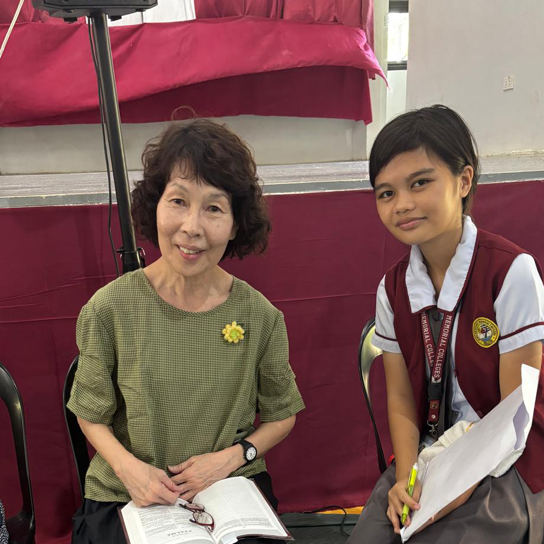

Testimonies of the Almighty's Goodness

Eld Eliezer Ortega
"...the
Mission Team had walked through the mud like a farmer who would not be
deterred to nurture and cultivate the crops."

Dns Diana Chan
"May the Lord, in His grace, grant these children salvation and
even call
some to serve Him in His harvest."

Eld & Mrs Alan Choy
"I thank God for the precious opportunity to join the mission team
to Cebu."
Sis Celine Lee
"None of these would have been possible without God Himself opening
the doors for us."
Sis Connie Ng
"I simply needed to obey and trust in His enabling grace."
Bro Christyasto
"...that I may treasure every opportunity to grow... and be an
encouragement to the people the Lord sends my way..."
Bro Edward Wong
"Having witnessed the mighty hand of God guiding us... I cannot
keep silent."
Dn Gan Chin Hwi
"In the end, each of us fit in harmoniously; praise the Lord."
Bro Gideon Lee
"There was no place for fear or hesitation. This was the day of
salvation for 900."
Pr & Mrs Jeremiah Sim
"It is truly amazing to witness how the Lord Jesus Christ has
placed all these plans and works together for the team."
Sis Joan Cheah
"Even the smallest seed planted in faith can bear much fruit."
Eld Lim Ah Sang
"By the Lord’s gracious providence, He opened the doors to the
harvest fields."
Sis Lee Kim Lei
"I am grateful for the unity and wholeheartedness of the team...
encouraging and helping wherever needed."
Eld Low Boon Siang
"May the Lord strengthen our faith as we continue to serve our
faithful and gracious God."
Sis Magdalene Lim
"Everyone worked with meticulous care, finding joy in their busy
schedules and carrying out their mission tasks with gladness."
Eld & Mrs Mah Chin Kwang
"The Lord hath done great things for us, whereof we are glad."
Sis Peggy Lee
"Having witnessed… I am beginning to learn to expect great things
from God and to make myself available for His service."
Pr Samson Hutagalung
"The Great Commission of Christ remains the responsibility of the
church and of all believers today."
Sis Sheryl Macapinig
"Behold, how good and how pleasant it is for brethren to dwell
together in unity!"
Dn & Mrs Tan Eng Huat
"We sought the Lord to help us serve with humility, joy, and
gladness, and with clean hands and pure hearts."
Pastor Reggor Galarpe
"We have been greatly blessed by your labors in the work of the
Gospel and by your love for the brethren."